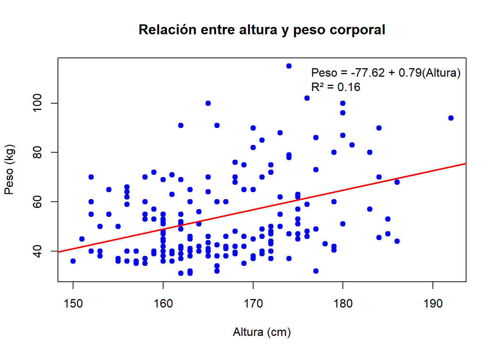
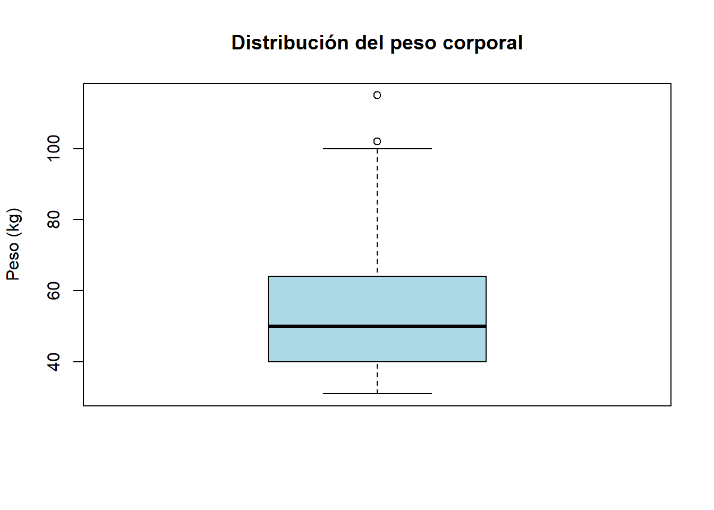
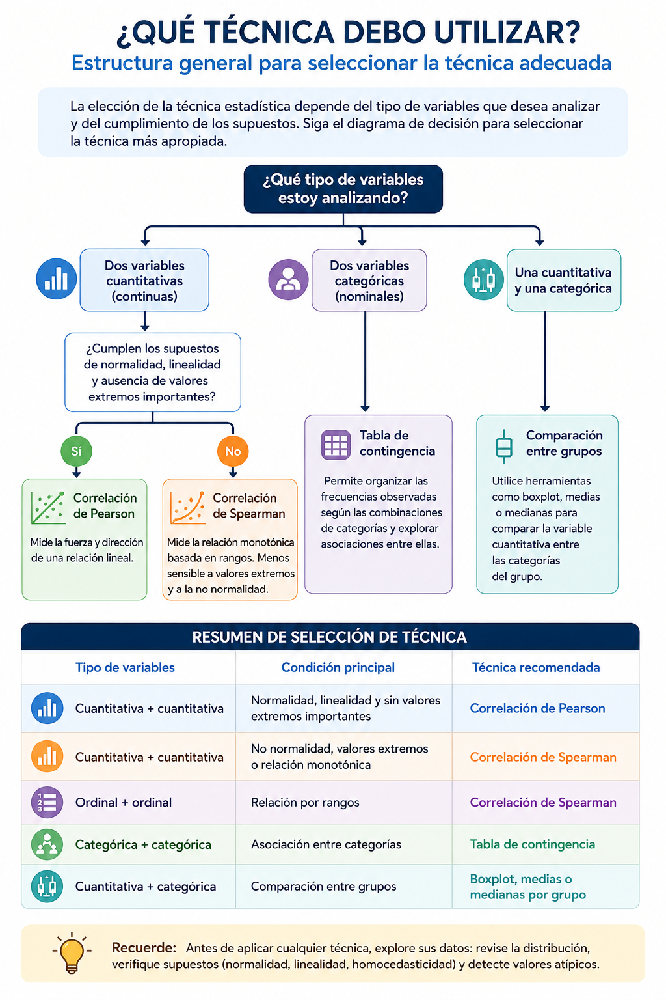
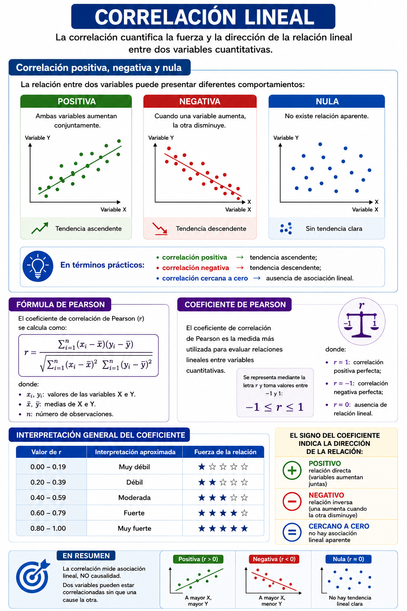
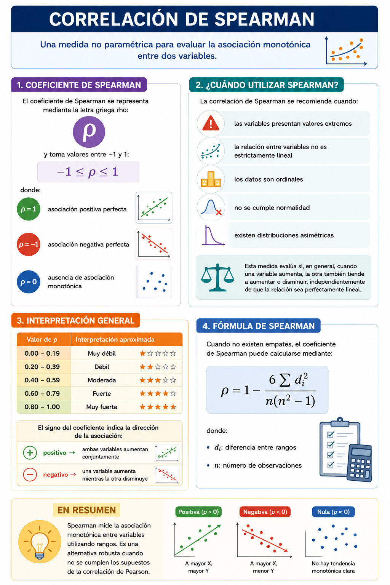
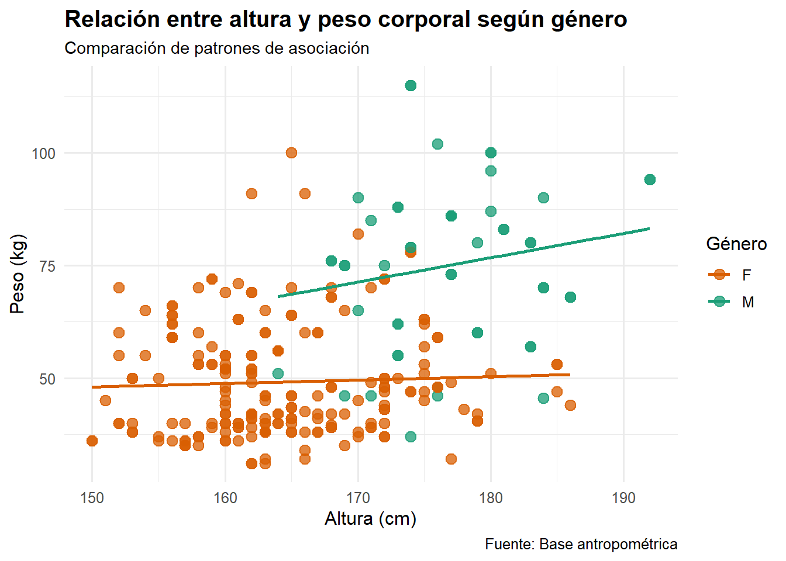
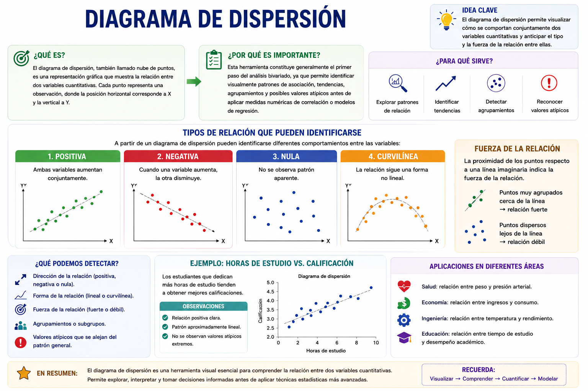
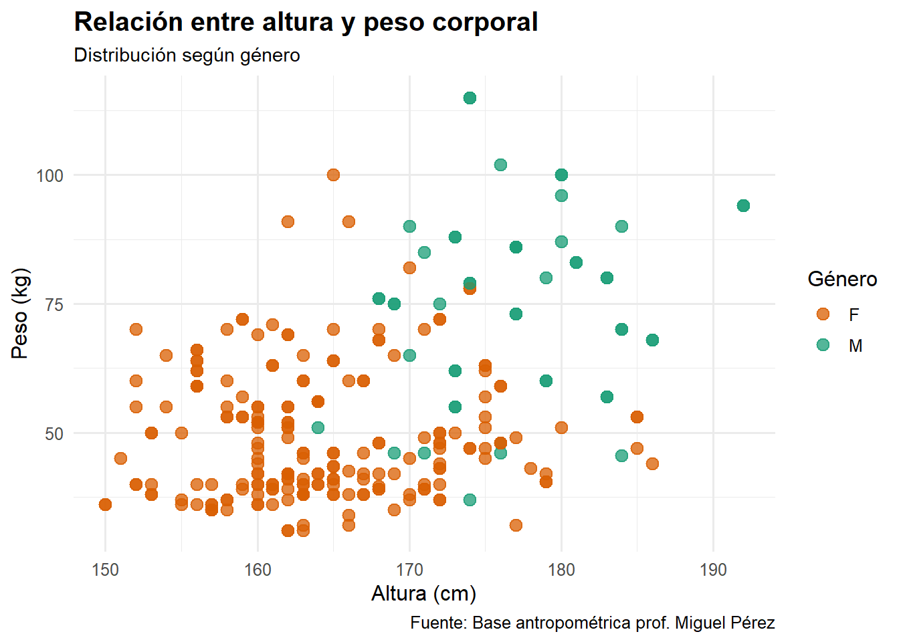
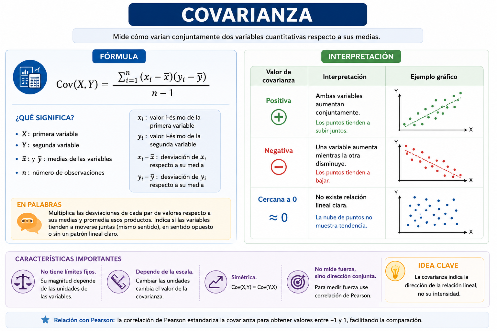

En los capítulos anteriores se estudiaron las características de una sola variable a la vez, analizando aspectos como la tendencia central, la dispersión, la posición y la forma de los datos. Sin embargo, en los problemas reales rara vez las variables actúan de manera aislada. En la práctica, los fenómenos sociales, económicos, educativos, biológicos y administrativos suelen depender de la interacción entre múltiples variables.
Por ejemplo, en educación puede surgir la pregunta de si un mayor número de horas de estudio se relaciona con mejores calificaciones; en salud, si existe asociación entre el índice de masa corporal y la presión arterial; o en economía, si el nivel de ingresos influye sobre el gasto familiar. Todas estas situaciones requieren estudiar simultáneamente dos variables y comprender cómo se comportan conjuntamente.
El análisis bivariado corresponde precisamente al conjunto de técnicas estadísticas utilizadas para explorar, describir, cuantificar e interpretar la relación entre dos variables medidas sobre las mismas unidades de análisis. A diferencia del análisis univariado, cuyo propósito es describir individualmente una variable, el análisis bivariado busca identificar patrones de asociación, dependencia o predicción entre variables.
Dependiendo de la naturaleza de las variables involucradas, el análisis bivariado puede abordar diferentes situaciones: relaciones entre variables cuantitativas; asociaciones entre variables categóricas; comparación de una variable cuantitativa entre categorías.
En este capítulo se desarrollan las principales herramientas del análisis bivariado, incluyendo: diagramas de dispersión, covarianza, correlación de Pearson, correlación de Spearman, tablas de contingencia, y regresión lineal simple.
Cada técnica será presentada desde una perspectiva teórica y posteriormente aplicada mediante ejemplos desarrollados en R utilizando un mismo conjunto de datos, con el propósito de facilitar la comprensión progresiva del análisis estadístico y fortalecer el aprendizaje experiencial. Es importante destacar que el análisis bivariado constituye la base de técnicas estadísticas más avanzadas, como la regresión múltiple, el análisis multivariado y los modelos predictivos utilizados actualmente en ciencia de datos, inteligencia artificial y analítica aplicada.
9.1 Tipos de análisis bivariado
El tipo de análisis bivariado que puede realizarse depende de la naturaleza de las variables estudiadas. En estadística, las variables pueden ser cuantitativas o categóricas, y cada combinación requiere herramientas específicas de exploración, visualización e interpretación.
Cuando ambas variables son cuantitativas, el interés suele centrarse en evaluar si existe asociación, dependencia o relación funcional entre ellas. En estos casos se utilizan herramientas como diagramas de dispersión, covarianza, correlación y regresión lineal. Por ejemplo, puede analizarse la relación entre horas de estudio y calificación final, o entre peso corporal y estatura.
Si ambas variables son categóricas, el objetivo principal consiste en estudiar asociaciones entre categorías o grupos. Para ello se emplean tablas de contingencia y medidas de asociación categórica. Un ejemplo frecuente corresponde al análisis de la relación entre género y nivel de satisfacción académica.
También existen situaciones donde una variable es cuantitativa y la otra categórica. En estos casos, el interés radica en comparar el comportamiento de la variable numérica entre diferentes grupos o categorías. Por ejemplo, comparar las calificaciones promedio entre hombres y mujeres, o analizar diferencias salariales entre regiones.
La siguiente tabla resume las principales combinaciones posibles en el análisis bivariado:
Tipo de variable 1
Tipo de variable 2
Objetivo principal
Técnicas utilizadas
Cuantitativa
Cuantitativa
Evaluar asociación o predicción
Correlación, regresión, dispersión
Categórica
Categórica
Analizar asociación entre categorías
Tablas de contingencia
C uantitativa
Categórica
Comparar grupos
Boxplot, medias, comparación gráfica
Comprender el tipo de variables involucradas constituye un paso fundamental antes de seleccionar cualquier técnica estadística, ya que una elección incorrecta puede conducir a interpretaciones inadecuadas o resultados inconsistentes.
En este capítulo se abordarán ejemplos correspondientes a cada una de estas situaciones, integrando representaciones gráficas, medidas estadísticas y modelos básicos de análisis bivariado mediante implementaciones desarrolladas en R.
9.2 Conjunto de datos de trabajo
A lo largo de este capítulo se utilizará un mismo conjunto de datos con el propósito de ilustrar las diferentes técnicas de análisis bivariado de manera integrada y progresiva. El uso de un único dataset facilita la comparación de resultados y permite comprender cómo distintas herramientas estadísticas pueden analizar una misma realidad desde perspectivas complementarias.
La base de datos contiene información correspondiente a estudiantes universitarios e incluye variables cuantitativas y categóricas, entre ellas:
horas de estudio semanales, calificación final, horas de sueño, y género.
Estas variables permiten desarrollar ejemplos relacionados con:
relaciones entre variables cuantitativas, asociaciones entre variables categóricas, y comparación de grupos.
En términos pedagógicos, este enfoque favorece el aprendizaje experiencial, ya que el estudiante puede observar cómo los conceptos teóricos se aplican directamente sobre datos reales mediante análisis reproducibles en R.
# A tibble: 6 × 17
Clase Grupo Genero Altura_cm Peso_Kg Anchura_hombros_cm Long_Mano_cm
<chr> <chr> <chr> <dbl> <dbl> <dbl> <dbl>
1 D A M 177 73 49 19
2 D A M 177 86 45 19
3 D A F 160 52 37 16
4 D A F 159 53 38 16
5 D A F 174 78 41 18
6 D B M 186 68 44 19
# ℹ 10 more variables: Lon_Palma_cm <dbl>, Ancho_Palma_cm <dbl>,
# Long_Brazo_cm <dbl>, Long_Antebrazo_cm <dbl>, Long_Pierna_cm <dbl>,
# Long_Pie_cm <dbl>, Curso <chr>, Talla_Dicotica <chr>, IMC_Dicotico <chr>,
# Mano_Dicotica <chr>
La correlación de Pearson está diseñada para analizar la relación entre variables cuantitativas continuas. Estas variables pueden asumir cualquier valor dentro de un intervalo determinado y suelen corresponder a procesos de medición, como altura, peso corporal, índice de masa corporal, temperatura o presión arterial.
A diferencia de las variables cualitativas o discretas, las variables continuas permiten evaluar cambios graduales en los valores observados, lo que facilita el estudio de relaciones lineales entre ellas. Por esta razón, antes de aplicar una correlación de Pearson es importante verificar que ambas variables correspondan a mediciones cuantitativas continuas.
En el presente ejemplo, las variables altura (cm) y peso corporal (kg) cumplen este supuesto, ya que representan mediciones físicas obtenidas en una escala numérica continua.
9.5.2 Prueba de normalidad Shapiro-Wilk
La prueba de Shapiro-Wilk permite evaluar si una variable cuantitativa presenta una distribución aproximadamente normal. En este caso, se analizan las variables altura y peso corporal de los estudiantes.
La hipótesis nula (\(H_0\)) establece que los datos siguen una distribución normal, mientras que la hipótesis alternativa (\(H_1\)) plantea que la distribución no es normal.
La decisión se toma a partir del valor \(p\):
si \(p > 0.05\), no se rechaza la normalidad;
si \(p \leq 0.05\), se concluye que la variable no presenta distribución normal.
Estas pruebas son importantes porque muchas técnicas estadísticas paramétricas, como la correlación de Pearson y la regresión lineal, asumen normalidad en los datos.
library(readxl)library(dplyr)library(purrr)# Cargar base de datosdatos <-read_excel("C:/R-Proyectos/estadistica-experiencial/data/bd_antropometricas.xlsx")# Seleccionar variables numéricasvariables_numericas <- datos %>%select(where(is.numeric))# Aplicar Shapiro-Wilk a cada variablenormalidad <-map_df(names(variables_numericas),~{ prueba <-shapiro.test(na.omit(variables_numericas[[.x]]) )data.frame(Variable = .x,W =round(prueba$statistic, 4),p_value =round(prueba$p.value, 6),Normalidad =ifelse( prueba$p.value >0.05,"Sí presenta normalidad","No presenta normalidad" ) ) })# Mostrar resultadosnormalidad
Variable W p_value Normalidad
W...1 Altura_cm 0.9753 0.000172 No presenta normalidad
W...2 Peso_Kg 0.9040 0.000000 No presenta normalidad
W...3 Anchura_hombros_cm 0.8824 0.000000 No presenta normalidad
W...4 Long_Mano_cm 0.2747 0.000000 No presenta normalidad
W...5 Lon_Palma_cm 0.9460 0.000000 No presenta normalidad
W...6 Ancho_Palma_cm 0.9310 0.000000 No presenta normalidad
W...7 Long_Brazo_cm 0.7635 0.000000 No presenta normalidad
W...8 Long_Antebrazo_cm 0.7616 0.000000 No presenta normalidad
W...9 Long_Pierna_cm 0.9950 0.564763 Sí presenta normalidad
W...10 Long_Pie_cm 0.9914 0.134404 Sí presenta normalidad
9.5.3 Independencia de las observaciones
La correlación de Pearson asume que cada observación es independiente de las demás. Esto significa que el valor registrado para un individuo no debe influir sobre los valores observados en otro individuo.
Este supuesto depende principalmente del diseño de recolección de los datos. En estudios donde cada participante aporta una única medición, como ocurre con la altura y el peso corporal de los estudiantes, generalmente se considera que existe independencia entre las observaciones.
9.5.4 Relación lineal
La correlación de Pearson evalúa exclusivamente relaciones lineales entre variables. Por ello, antes de calcular el coeficiente de correlación es recomendable construir un diagrama de dispersión para verificar que los datos presentan una tendencia aproximadamente recta.
De manera general, una relación lineal puede representarse mediante la ecuación: \(Y=β_0+β_1X\)
donde:
(\(Y\)) representa la variable dependiente;
(\(X\)) corresponde a la variable independiente;
(\(β_0\)) es el intercepto;
(\(β_1\)) representa la pendiente de la relación.
Cuando la relación es lineal, un incremento en una variable tiende a estar asociado con un incremento o disminución proporcional en la otra variable. Si la relación presenta formas curvas o patrones complejos, la correlación de Pearson puede subestimar la verdadera asociación existente.
En este ejemplo, la linealidad puede evaluarse visualmente mediante el diagrama de dispersión entre altura y peso corporal.
# Modelo de regresiónmodelo <-lm( Peso_Kg ~ Altura_cm,data = datos)# Coeficientesb0 <-coef(modelo)[1]b1 <-coef(modelo)[2]# R²r2 <-summary(modelo)$r.squared# Gráficoplot( datos$Altura_cm, datos$Peso_Kg,main ="Relación entre altura y peso corporal",xlab ="Altura (cm)",ylab ="Peso (kg)",pch =19,col ="blue")# Línea de regresiónabline( modelo,col ="red",lwd =2)# Ecuación y R²legend("topright",legend =c(paste0("Peso = ",round(b0,2)," + ",round(b1,2),"(Altura)" ),paste0("R² = ",round(r2,3) ) ),bty ="n")

Interpretación: La ecuación de regresión obtenida fue: \(\hat{Peso} = \beta_0 + \beta_1(Altura)\), donde \(\beta_0\) representa el intercepto y \(\beta_1\) el cambio esperado en el peso corporal por cada centímetro adicional de altura. El coeficiente de determinación (\(R^2\)) indica la proporción de variabilidad del peso explicada por la altura. Valores cercanos a 0 sugieren una relación débil, mientras que valores cercanos a 1 indican una relación fuerte. De acuerdo con lo anterior el diagrama de dispersión muestra una tendencia positiva entre la altura y el peso corporal de los estudiantes. En términos generales, a medida que aumenta la altura, el peso también tiende a incrementarse.
La ecuación de regresión obtenida fue: \(\hat{Peso}=-77.62+0.79(Altura)\). Esto significa que, en promedio, por cada centímetro adicional de altura, el peso corporal aumenta aproximadamente 0.79 kg.
El coeficiente de determinación fue: \(R^2 = 0.16\), Lo que indica que la altura explica aproximadamente el 16 % de la variabilidad observada en el peso corporal. El 84 % restante se debe a otros factores no incluidos en el modelo, como sexo, composición corporal, hábitos alimentarios, actividad física y variabilidad individual.
Visualmente, la nube de puntos presenta una tendencia ascendente compatible con una relación lineal positiva; sin embargo, la dispersión de los datos alrededor de la recta es relativamente amplia, lo que sugiere que la relación entre ambas variables es débil a moderada.
9.5.5 Regresión lineal múltiple
En la regresión lineal simple se analiza la relación entre una variable respuesta (\(Y\)) y una única variable explicativa (\(X\)). Sin embargo, muchos fenómenos reales dependen simultáneamente de varios factores, por lo que resulta necesario incorporar múltiples variables predictoras dentro del modelo. La regresión lineal múltiple puede expresarse como:
- \(Y\): variable respuesta o dependiente.
- \(\beta_0\): intercepto del modelo.
- \(X_1, X_2, \ldots, X_k\): variables explicativas o predictoras.
- \(\beta_1, \beta_2, \ldots, \beta_k\): coeficientes asociados a cada predictor.
En este contexto, el supuesto de linealidad implica que cada variable explicativa mantiene una relación lineal con la variable respuesta, una vez controlado el efecto de las demás variables incluidas en el modelo.
Por ejemplo, en la base antropométrica el peso corporal podría modelarse utilizando simultáneamente variables como la altura, la longitud de la pierna, la longitud del pie, la longitud de la mano, el índice de masa corporal (IMC) y el sexo. De esta manera, el modelo permite evaluar el aporte específico de cada característica sobre el peso corporal, manteniendo constantes las demás variables.
La homocedasticidad indica que la variabilidad de una variable se mantiene relativamente constante a lo largo de los valores de la otra variable. Por ejemplo:
altura baja → dispersión similar
altura media → dispersión similar
altura alta → dispersión similar
La homocedasticidad implica que la varianza de los errores es constante para todos los valores de la variable independiente:
Interpretación: La homocedasticidad hace referencia a la igualdad aproximada de la variabilidad de los datos a lo largo de los diferentes valores de la variable independiente. Este supuesto es importante porque muchas técnicas paramétricas asumen que la dispersión de los errores permanece constante.
La evaluación visual puede realizarse mediante un gráfico de residuos frente a los valores ajustados. Cuando los residuos se distribuyen aleatoriamente alrededor de cero y mantienen una amplitud similar en todo el rango de observaciones, se considera que existe homocedasticidad. Por el contrario, si la dispersión aumenta o disminuye sistemáticamente formando patrones de abanico o embudo, podría existir heterocedasticidad, indicando que la variabilidad de los errores no es constante.
9.5.7 Ausencia de valores atípicos extremos
Los valores atípicos extremos (outliers) pueden afectar significativamente el coeficiente de correlación de Pearson, generando estimaciones sesgadas o conclusiones incorrectas sobre la intensidad de la relación entre las variables.
Para identificar posibles valores atípicos se recomienda utilizar diagramas de caja (boxplots) o diagramas de dispersión. Si se detectan observaciones extremas, estas deben revisarse cuidadosamente para determinar si corresponden a errores de registro o a valores reales de la población estudiada.
La presencia de valores atípicos no implica necesariamente su eliminación, pero sí requiere una evaluación crítica antes de realizar el análisis estadístico.
library(readxl)datos <-read_excel("data/bd_antropometricas.xlsx")boxplot( datos$Peso_Kg,main ="Distribución del peso corporal",ylab ="Peso (kg)",col ="lightblue")

9.6 Estructura general para seleccionar la técnica adecuada
En el análisis bivariado, la selección de la técnica estadística depende principalmente del tipo de variables que se desean analizar y de los supuestos que cumplen los datos (Figura 9.1). Por esta razón, antes de aplicar cualquier procedimiento es necesario identificar si las variables son cuantitativas o categóricas, revisar su distribución, explorar la forma de la relación y verificar la presencia de valores atípicos.

Figura 9.1
9.7 Cuando se cumplen los supuestos
En el caso de las variables Long_Pierna_cm y Long_Pie_cm presentan un comportamiento compatible con una distribución normal según la prueba de Shapiro-Wilk.
Para la variable Long_Pierna_cm, se obtuvo un estadístico \(W = 0.9950\) y un valor \(p = 0.564763\). Debido a que el valor \(p\) es mayor que \(0.05\), no se rechaza la hipótesis nula de normalidad. Esto indica que la distribución de la longitud de la pierna no presenta diferencias significativas respecto a una distribución normal.
De manera similar, la variable Long_Pie_cm presentó un estadístico \(W = 0.9914\) y un valor \(p = 0.134404\). Al ser también mayor que \(0.05\), se concluye que la longitud del pie presenta una distribución aproximadamente normal.
En términos prácticos, estos resultados sugieren que ambas variables antropométricas poseen distribuciones relativamente simétricas y sin desviaciones extremas importantes, lo cual favorece la aplicación de técnicas estadísticas paramétricas, como: correlación de Pearson, pruebas t, análisis de regresión lineal e intervalos de confianza basados en normalidad.
Asimismo, el comportamiento normal de estas variables es coherente con muchas mediciones biológicas y antropométricas, donde las características físicas de una población suelen distribuirse alrededor de un valor promedio central.
9.7.1 Correlación de Pearson
La correlación es una medida estadística utilizada para cuantificar la fuerza y la dirección de la relación entre dos variables cuantitativas. A diferencia del diagrama de dispersión, que permite explorar visualmente el comportamiento conjunto de las variables, la correlación resume dicha relación mediante un valor numérico (Figura 9.2). El coeficiente de correlación de Pearson se calcula como:
\[
r = \frac{\sum_{i=1}^{n}(x_i-\bar{x})(y_i-\bar{y})}
{\sqrt{\sum_{i=1}^{n}(x_i-\bar{x})^2 \sum_{i=1}^{n}(y_i-\bar{y})^2}}
\]
El coeficiente de correlación indica qué tan estrechamente se relacionan dos variables y si dicha relación es positiva, negativa o inexistente.

Figura 9.2
9.7.1.1 Ejemplo en R
En el siguiente ejemplo se calcula la correlación entre altura y peso corporal utilizando la base de datos antropométrica.
library(readxl)library(ggplot2)# Cargar base de datosdatos <-read_excel("C:/R-Proyectos/estadistica-experiencial/data/bd_antropometricas.xlsx")# Calcular correlaciónr <-cor( datos$Long_Pierna_cm, datos$Long_Pie_cm,method ="pearson",use ="complete.obs")# Gráficoggplot( datos,aes(x = Long_Pierna_cm,y = Long_Pie_cm,color = Genero )) +geom_point(size =3,alpha =0.75 ) +scale_color_manual(values =c("F"="#D95F02","M"="#1B9E77" ) ) +geom_smooth(method ="lm",se =FALSE,color ="black",linewidth =1 ) +annotate("text",x =min(datos$Long_Pierna_cm) +5,y =max(datos$Long_Pie_cm) -5,label =paste0("r = ",round(r, 3) ),size =5,fontface ="bold",color ="black" ) +labs(title ="Relación entre Longitud Pierna y Longitud pie",subtitle ="Diagrama de dispersión y correlación de Pearson",x ="Longitud Pierna (cm)",y ="Longitud pie (cm)",color ="Género",caption ="Fuente: Base antropométrica Prof. Miguel Pérez" ) +theme_minimal(base_size =12)
Interpretación: El diagrama de dispersión permite explorar la relación entre la longitud de la pierna y la longitud del pie en los estudiantes, diferenciando las observaciones según el género. Visualmente, los puntos se encuentran ampliamente dispersos y no muestran una tendencia lineal clara entre ambas variables.
El coeficiente de correlación de Pearson obtenido (\(r = 0.012\)) indica una asociación lineal prácticamente nula entre la longitud de la pierna y la longitud del pie. Este valor, al encontrarse muy cercano a cero, sugiere que el aumento en una de las variables no se relaciona de manera consistente con cambios en la otra dentro de la muestra analizada.
Asimismo, la línea de tendencia horizontal observada en el gráfico confirma la ausencia de una relación lineal significativa. Aunque existen diferencias naturales entre hombres y mujeres en la distribución de las observaciones, dichas variaciones no generan un patrón de asociación fuerte entre las variables estudiadas.
En términos prácticos, estos resultados indican que la longitud de la pierna no constituye un buen predictor lineal de la longitud del pie en esta población específica. Este tipo de análisis es importante porque demuestra que no todas las variables antropométricas presentan relaciones lineales fuertes, incluso cuando pertenecen a una misma dimensión biológica..
9.8 Cuando no se cumplen los supuestos
Interpretación Altura_cm y Peso_Kg: La prueba de Shapiro-Wilk indica que ninguna de las dos variables presenta una distribución normal al nivel de significancia del 5 %.
Para la variable Altura_cm, se obtuvo un estadístico \(W = 0.9752\) y un valor \(p = 0.000171\). Debido a que el valor \(p\) es menor que \(0.05\), se rechaza la hipótesis nula de normalidad, concluyendo que la distribución de la altura difiere significativamente de una distribución normal.
De manera similar, para la variable Peso_Kg, el estadístico obtenido fue \(W = 0.9040\) con un valor \(p = 7.916 \times 10^{-12}\), valor extremadamente pequeño que también conduce al rechazo de la hipótesis de normalidad. Esto indica que la distribución del peso corporal presenta desviaciones importantes respecto a la normalidad.
En términos prácticos, estos resultados sugieren que las variables antropométricas analizadas no cumplen completamente el supuesto de normalidad requerido por algunas técnicas paramétricas. Por esta razón, en determinados contextos podría ser recomendable complementar el análisis utilizando métodos no paramétricos, como la correlación de Spearman, especialmente si existen valores extremos o distribuciones asimétricas.
9.8.1 Correlación de Spearman
La correlación de Spearman es una medida estadística utilizada para evaluar la asociación entre dos variables ordinales o cuantitativas cuando no se cumplen los supuestos de normalidad o linealidad requeridos por la correlación de Pearson (Figura 9.3).
A diferencia de Pearson, Spearman no trabaja directamente con los valores originales de las variables, sino con sus rangos o posiciones dentro de la distribución. Por esta razón, se considera una medida no paramétrica de asociación.

Figura 9.3
library(readxl)library(ggplot2)library(dplyr)# Cargar base de datosdatos <-read_excel("C:/R-Proyectos/estadistica-experiencial/data/bd_antropometricas.xlsx")# Correlación por génerodatos %>%group_by(Genero) %>%summarise(Correlacion =cor( Altura_cm, Peso_Kg,method ="spearman",use ="complete.obs" ) )
# A tibble: 2 × 2
Genero Correlacion
<chr> <dbl>
1 F 0.0657
2 M 0.178
# Diagrama de dispersión por géneroggplot( datos,aes(x = Altura_cm,y = Peso_Kg,color = Genero )) +geom_point(size =3,alpha =0.75 ) +geom_smooth(method ="lm",se =FALSE,linewidth =1 ) +scale_color_manual(values =c("F"="#D95F02","M"="#1B9E77" ) ) +labs(title ="Relación entre altura y peso corporal según género",subtitle ="Comparación de patrones de asociación",x ="Altura (cm)",y ="Peso (kg)",color ="Género",caption ="Fuente: Base antropométrica" ) +theme_minimal(base_size =12) +theme(plot.title =element_text(face ="bold",size =15 ),plot.subtitle =element_text(size =11 ) )

9.9 Otras medidas de asociación
9.9.1 Diagrama de dispersión
El diagrama de dispersión, también conocido como nube de puntos, es una representación gráfica utilizada para explorar la relación entre dos variables cuantitativas. Cada punto del gráfico representa una observación y su posición en el plano cartesiano depende de los valores registrados para las variables \(X\) y \(Y\).
Esta herramienta constituye generalmente el primer paso del análisis bivariado, ya que permite identificar visualmente patrones de asociación, tendencias, agrupamientos y posibles valores atípicos antes de aplicar medidas numéricas de correlación o modelos de regresión (Figura 9.4). A partir de un diagrama de dispersión pueden identificarse diferentes comportamientos entre las variables:

Figura 9.4
9.9.1.1 Ejemplo en R
En el siguiente ejemplo se utiliza la base de datos antropométrica para analizar la relación entre la estatura de los estudiantes y su peso corporal. El objetivo consiste en explorar visualmente si existe asociación entre ambas variables mediante un diagrama de dispersión.
library(readxl)library(ggplot2)# Cargar base de datosdatos <-read_excel("C:/R-Proyectos/estadistica-experiencial/data/bd_antropometricas.xlsx")# Diagrama de dispersiónggplot( datos,aes(x = Altura_cm,y = Peso_Kg,color = Genero )) +geom_point(size =3,alpha =0.75 ) +scale_color_manual(values =c("F"="#D95F02","M"="#1B9E77" ) ) +labs(title ="Relación entre altura y peso corporal",subtitle ="Distribución según género",x ="Altura (cm)",y ="Peso (kg)",color ="Género",caption ="Fuente: Base antropométrica prof. Miguel Pérez" ) +theme_minimal(base_size =12) +theme(plot.title =element_text(face ="bold",size =15 ),plot.subtitle =element_text(size =11 ),legend.position ="right" )

Interpretación: El diagrama de dispersión permite explorar visualmente la relación entre la altura y el peso corporal de los estudiantes, diferenciando las observaciones según el género. En general, se observa una tendencia positiva entre ambas variables, indicando que a mayores valores de altura tienden a presentarse mayores valores de peso corporal.
La diferenciación por color facilita identificar posibles agrupamientos entre hombres y mujeres, evidenciando patrones distintos en la distribución de las observaciones. Este tipo de visualización resulta útil para detectar comportamientos particulares dentro de subgrupos poblacionales y constituye una herramienta exploratoria fundamental antes de aplicar medidas numéricas de asociación o modelos estadísticos más complejos.
Advertencia
El diagrama de dispersión es principalmente una herramienta de análisis exploratorio y visualización bivariada. NO es todavía una correlación numérica.
9.9.2 Covarianza
La covarianza es una medida estadística utilizada para evaluar cómo varían conjuntamente dos variables cuantitativas respecto a sus medias. Esta medida permite identificar si ambas variables tienden a aumentar simultáneamente, disminuir conjuntamente o comportarse de manera independiente (Figura 9.5).
La covarianza constituye uno de los fundamentos matemáticos de la correlación lineal y de la regresión.

Figura 9.5
9.9.2.1 Ejemplo en R
library(readxl)# Cargar base de datosdatos <-read_excel("C:/R-Proyectos/estadistica-experiencial/data/bd_antropometricas.xlsx")# Covarianzacov( datos$Long_Pierna_cm, datos$Long_Pie_cm,use ="complete.obs")
[1] 0.06261345
Interpetación: La covarianza calculada (\(r = 0.062\)) entre la longitud de la pierna y la longitud del pie presenta un valor cercano a cero, indicando que ambas variables no muestran una variación conjunta importante dentro de la muestra analizada.
Este resultado coincide con el análisis de correlación de Pearson previamente realizado (\(r = 0.012\)), donde también se evidenció una relación lineal prácticamente nula entre las variables. En términos prácticos, los cambios en la longitud de la pierna no se asocian de manera consistente con cambios en la longitud del pie en los estudiantes evaluados.
Asimismo, este ejemplo permite comprender que no todas las variables antropométricas presentan asociaciones lineales fuertes, incluso cuando pertenecen a dimensiones corporales relacionadas.
9.9.3 Tablas de contingencia
Las tablas de contingencia son herramientas estadísticas utilizadas para resumir y analizar la relación entre dos variables categóricas. Estas tablas permiten organizar las frecuencias observadas según las diferentes combinaciones de categorías presentes en las variables estudiadas.
También son conocidas como: tablas cruzadas, tablas de doble entrada o tablas de asociación.
Su principal objetivo consiste en identificar posibles patrones de relación o dependencia entre categorías.
9.9.3.1 Estructura general
Una tabla de contingencia distribuye las observaciones en filas y columnas:
Categoría B1
Categoría B2
Total
Categoría A1
\(f_{11}\)
\(f_{12}\)
\(f_{1\cdot}\)
Categoría A2
\(f_{21}\)
\(f_{22}\)
\(f_{2\cdot}\)
Total
\(f_{\cdot1}\)
\(f_{\cdot2}\)
\(n\)
donde:
las filas representan categorías de una variable;
las columnas representan categorías de la otra variable;
cada celda contiene la frecuencia observada.
9.9.4 Interpretación
Las tablas de contingencia permiten comparar frecuencias entre grupos; identificar asociaciones entre categorías; calcular porcentajes conjuntos; analizar patrones poblacionales; servir como base para pruebas como Chi-cuadrado. Cuando las proporciones observadas son similares entre categorías, puede inferirse independencia entre las variables. En cambio, diferencias importantes sugieren posibles asociaciones.
9.9.5 Ejercicio contextual
En estudios educativos puede analizarse la relación entre género y aprobación académica; modalidad de estudio y rendimiento o nivel socioeconómico y acceso tecnológico. En salud tabaquismo y enfermedad; clasificación nutricional y actividad física.
9.9.6 Ejemplo en R
En el siguiente ejemplo se construye una tabla de contingencia entre género y grupo académico utilizando la base antropométrica.
library(readxl)library(dplyr)library(janitor)library(knitr)library(kableExtra)# Cargar base de datosdatos <-read_excel("C:/R-Proyectos/estadistica-experiencial/data/bd_antropometricas.xlsx")#====================================================# 1. Género vs Talla dicotómica#====================================================datos %>%tabyl( Genero, Talla_Dicotica ) %>%adorn_totals(c("row", "col")) %>%adorn_percentages("row") %>%adorn_pct_formatting(digits =1) %>%adorn_ns(position ="front") %>%kable(caption ="Tabla de contingencia: Género y talla dicotómica",align ="c" ) %>%kable_styling(full_width =FALSE,bootstrap_options =c("striped","hover","condensed" ) )
Tabla de contingencia: Género y talla dicotómica
Genero
Alta
Baja
Total
F
23 (11.1%)
185 (88.9%)
208 (100.0%)
M
30 (57.7%)
22 (42.3%)
52 (100.0%)
Total
53 (20.4%)
207 (79.6%)
260 (100.0%)
#====================================================# 2. Género vs IMC dicotómico#====================================================datos %>%tabyl( Genero, IMC_Dicotico ) %>%adorn_totals(c("row", "col")) %>%adorn_percentages("row") %>%adorn_pct_formatting(digits =1) %>%adorn_ns(position ="front") %>%kable(caption ="Tabla de contingencia: Género e IMC dicotómico",align ="c" ) %>%kable_styling(full_width =FALSE,bootstrap_options =c("striped","hover","condensed" ) )
Tabla de contingencia: Género e IMC dicotómico
Genero
Bajo_Peso
Normal+
Total
F
127 (61.1%)
81 (38.9%)
208 (100.0%)
M
10 (19.2%)
42 (80.8%)
52 (100.0%)
Total
137 (52.7%)
123 (47.3%)
260 (100.0%)
#====================================================# 3. Género vs Tamaño de mano#====================================================datos %>%tabyl( Genero, Mano_Dicotica ) %>%adorn_totals(c("row", "col")) %>%adorn_percentages("row") %>%adorn_pct_formatting(digits =1) %>%adorn_ns(position ="front") %>%kable(caption ="Tabla de contingencia: Género y tamaño de mano",align ="c" ) %>%kable_styling(full_width =FALSE,bootstrap_options =c("striped","hover","condensed" ) )
Tabla de contingencia: Género y tamaño de mano
Genero
Grande
Pequeña
Total
F
26 (12.5%)
182 (87.5%)
208 (100.0%)
M
38 (73.1%)
14 (26.9%)
52 (100.0%)
Total
64 (24.6%)
196 (75.4%)
260 (100.0%)
Interpretación: En términos generales, el 88.9 % de las mujeres se clasifican dentro del rango normal de IMC y el 11.1 % presenta sobrepeso u obesidad. En contraste, entre los hombres solo el 48.1 % presenta IMC normal, mientras que el 51.9 % se ubica en la categoría de sobrepeso-obesidad. Considerando el total de la muestra, el 80.8 % de los estudiantes presenta un IMC normal y el 19.2 % presenta sobrepeso u obesidad.
Estos resultados sugieren una posible asociación entre el género y la clasificación del IMC, evidenciando una mayor proporción de sobrepeso-obesidad en los hombres respecto a las mujeres dentro de la población analizada. Las tablas de contingencia permiten identificar este tipo de patrones descriptivos y constituyen la base para posteriores análisis inferenciales, como la prueba Chi-cuadrado de independencia.
9.10 Integración y aplicación
9.10.1 Estructura general para seleccionar la técnica adecuada
9.10.2 Laboratorio experiencial
¿Existe relación entre la altura y el peso corporal?
Situación problema: Un grupo de estudiantes de fisioterapia desea analizar si la altura corporal se relaciona con el peso de los estudiantes universitarios. Para ello, se recolectó información antropométrica de hombres y mujeres de diferentes semestres académicos.
Objetivo del análisis
Determinar: si existe relación entre altura y peso; la dirección de la relación; la fuerza de la asociación y si el género modifica visualmente el comportamiento de los datos.
9.10.3 Actividades del estudiante
Parte 1 — Exploración visual
Preguntas
¿Qué tipo de relación observa en el diagrama? positiva, negativa, nula, urvilínea.
¿La relación parece fuerte o débil?
¿Existen valores atípicos?
¿Se observan diferencias entre hombres y mujeres?
Parte 2 — Correlación
Calcule: correlación de Pearson y correlación de Spearman.
Preguntas
¿Los coeficientes son similares?
¿Cuál considera más apropiado según la distribución de los datos?
¿Puede afirmarse causalidad?
Parte 3 — Interpretación aplicada
Un investigador afirma que “Los estudiantes más altos necesariamente pesan más”.